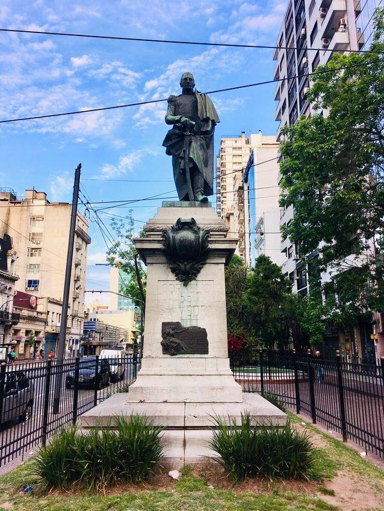
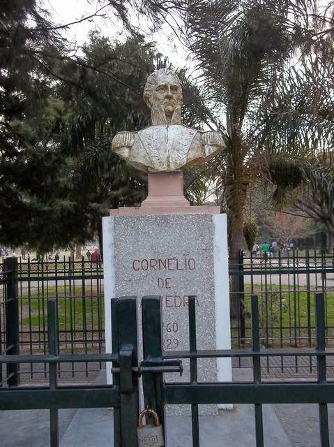

| Fecha | Motivo |
|---|---|
| 15 de septiembre de 1759 | Nacimiento de Cornelio Saavedra |
| 29 de marzo de 1829 | Fallecimiento de Cornelio Saavedra |
| 5 de junio de 1807 | Combate de los Patricios durante las Invasiones Inglesas; Saavedra era su jefe. |
| 22 de mayo de 1810 | Cabildo Abierto; Saavedra tuvo una participación fundamental. |
| 25 de mayo de 1810 | Formación de la Primera Junta, que Saavedra presidió. |
| 26 de mayo de 1810 | Primeros documentos de la Junta firmados bajo su gobierno, como presidente. |
Línea histórica de Cornelio Saavedra
Nacimiento de Cornelio Saavedra
El 15 de septiembre de 1759 nació Cornelio Saavedra en Otuyo, en la región de Potosí. Con el tiempo se convertiría en una de las principales figuras políticas y militares de los primeros años de la Revolución de Mayo.
Primera Invasión Inglesa
Durante la primera Invasión Inglesa, Saavedra participó en la organización de las milicias criollas que defendieron Buenos Aires. Estos acontecimientos aumentaron su prestigio como dirigente militar.
Segunda Invasión Inglesa
Saavedra tuvo un papel destacado durante la segunda Invasión Inglesa como jefe del Regimiento de Patricios. Sus tropas participaron en la defensa de Buenos Aires y contribuyeron a derrotar a las fuerzas británicas.
Cabildo Abierto
Saavedra participó en el Cabildo Abierto convocado para decidir el futuro político de Buenos Aires. Su posición fue fundamental para apoyar la destitución del virrey Baltasar Hidalgo de Cisneros.
Primera Junta
Se formó la Primera Junta de Gobierno y Cornelio Saavedra fue elegido como su presidente. Este acontecimiento marcó el comienzo de una nueva etapa política en el Río de la Plata y fue uno de los principales momentos de la Revolución de Mayo.
Presidencia de la Primera Junta
Como presidente de la Primera Junta, Saavedra participó en la organización del nuevo gobierno revolucionario y enfrentó importantes conflictos políticos y militares mientras se intentaba extender la revolución a otras regiones del antiguo Virreinato.
Fin de su influencia política
Durante 1811 aumentaron los conflictos entre los distintos grupos políticos de la revolución. Saavedra perdió influencia dentro del gobierno y posteriormente fue separado de sus funciones y enviado fuera de Buenos Aires.
Fallecimiento
El 29 de marzo de 1829 Cornelio Saavedra falleció en Buenos Aires a los 69 años. Fue recordado por su papel como jefe de los Patricios y, especialmente, por haber presidido la Primera Junta de Gobierno en 1810.
🏛️ Monumentos a Cornelio Saavedra

Monumento a Cornelio Saavedra
Monumento dedicado al Brigadier General Cornelio Saavedra, uno de los protagonistas de la Revolución de Mayo y presidente de la Primera Junta de Gobierno.
Ubicación: Plazoleta Regimiento 1.º de Patricios, Av. Córdoba y Av. Callao, Ciudad Autónoma de Buenos Aires.

Busto de Cornelio Saavedra
Busto dedicado a Cornelio Saavedra ubicado en el Parque Saavedra. El homenaje forma parte de la historia y del patrimonio del barrio que lleva su nombre.
Ubicación: Parque Saavedra, zona de Pinto y García del Río, Ciudad Autónoma de Buenos Aires.